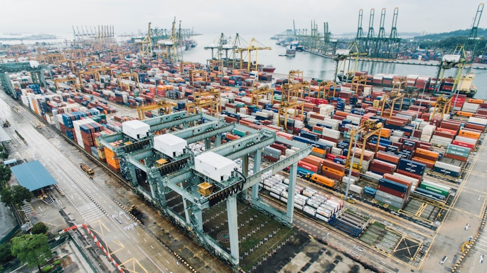

미중 자본통제 교차규제, 韓 반도체·배터리 소재 이중노출 리스크

미국 상무부는 2023년 10월 대중 반도체 수출통제 강화 규정(EAR 개정)을 통해 18nm 이하 D램, 128단 이상 낸드 생산 장비의 중국 수출을 사실상 금지했다. 이후 2024년 추가 개정으로 어드밴스드 패키징 장비까지 규제 대상을 확대, 국내 반도체 장비·소재 기업 약 30여 곳이 직접 영향권에 진입했다.
중국은 이에 맞서 갈륨(2023년 8월), 게르마늄(2023년 8월), 안티모니(2024년 9월), 흑연(2023년 12월) 등 전략광물 수출통제를 순차 발동했다. 한국의 중국산 흑연 수입 의존도는 2023년 기준 약 90%이며, 배터리 음극재 핵심 소재로 쓰인다. LG에너지솔루션·삼성SDI·SK온 등 국내 배터리 3사의 흑연 조달 비용은 2023년 대비 15~25% 상승한 것으로 업계는 추산한다.
미국 IRA(인플레이션감축법) 외국우려기관(FEOC) 규정은 2025년부터 중국산 배터리 소재 비중이 일정 기준 초과 시 세액공제를 전면 배제한다. 국내 배터리 3사의 2024년 기준 중국산 소재 혼입 비중은 양극재 기준 약 30~40% 수준으로, FEOC 규정 충족을 위한 공급망 재편 비용이 2025~2026년 수익성 압박 요인으로 작용할 전망이다.
미중 규제가 '소재 수입'과 '장비 수출' 양방향에서 동시에 한국을 압박하는 구조는 선택을 강요하는 것이 아니라 비용 증가를 구조화한다. 이는 단순한 지정학 리스크가 아니라 국내 반도체·배터리 기업의 마진 구조 자체를 바꾸는 문제다. 장비 수출 제한으로 매출이 줄고, 소재 수입 제한으로 원가가 오르는 이중 스퀴즈가 2025~2027년 실적 변수로 부상한다.
역설적으로 이 압박은 한국 내 대체 소재·장비 산업의 내재화 투자를 가속한다. 정부는 2024~2028년 소재·부품·장비(소부장) 2.0 전략에 총 3조 원 이상을 투입하기로 했으며, 흑연·리튬·니켈 등 핵심 소재의 국내 정련·가공 역량 구축이 핵심 과제로 명시됐다.
국내 비중국 소재 공급망 구축 수혜 기업: 포스코퓨처엠(흑연 음극재 자체 생산, 2026년 연 8만t 목표), 에코프로비엠(니켈 기반 양극재 내재화), 고려아연(갈륨·게르마늄 정련) 등은 탈중국 공급망 재편의 직접 수혜 포지션. 미국 IRA 보조금 적격 공급망 구축 시 단가 프리미엄 가산 가능.
반도체 장비 국산화 기업: 원익IPS, 주성엔지니어링 등 증착·식각 장비 기업은 중국향 수출 제한 반사 피해를 국내 투자 확대로 일부 상쇄. 삼성전자·SK하이닉스의 국내 팹 증설(삼성 평택 P4·P5, SK 용인 클러스터 120조 원 투자)에 따른 국내 장비 발주 증가가 2025~2027년 실적 버팀목.
중국 법인 비중이 높은 반도체 장비·소재 기업: 중국 매출 비중이 30% 이상인 국내 장비사(일부 식각·세정 장비 기업)는 EAR 규제 강화로 신규 수주 공백 발생. 2024년 국내 반도체 장비 대중 수출액은 전년 대비 약 22% 감소(산업통상자원부 추정).
배터리 소재 중소 협력사: FEOC 규정 충족을 위한 공급망 전환 비용은 대기업이 일부 부담하나, 2차·3차 협력사 레벨에서는 전환 비용 분담 없이 납품 단가 인하 압박에 노출될 가능성이 높다. 자본력이 부족한 중소 음극재·전해질 소재 기업의 수익성 악화 리스크 존재.
투자 체크포인트: 반도체·배터리 기업 실적 발표 시 '중국 매출 비중'과 '중국산 소재 의존도' 두 지표를 동시 추적. 두 수치가 모두 30% 이상인 기업은 규제 리스크 할인율을 적용하는 것이 합리적.
공급망 다변화 진척도 모니터링: 포스코퓨처엠의 흑연 자체 생산 라인 가동 일정(2026년 목표), 고려아연 갈륨 착공 공시 등 구체적 마일스톤을 분기별 투자 판단 기준으로 활용할 것.
실제 조달 현장에서는 — 국내 배터리 3사 구매팀이 중국산 흑연 대신 모잠비크·마다가스카르산 천연흑연과 일본 히타치화성 인조흑연을 복수 소싱하는 전환이 2024년 하반기부터 급격히 증가하는 패턴이 관찰된다. 다만 천연흑연 전환 시 배터리 에너지밀도가 약 5~8% 저하되는 기술적 트레이드오프가 있어, 소재 전환 기업의 배터리 셀 성능 지표를 병행 점검해야 한다.
이 포스팅은 쿠팡 파트너스 활동의 일환으로 수수료를 제공받습니다.